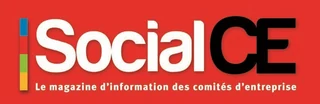

L’exposition aux risques psychosociaux propres à l’exercice du mandat.
Inscriptions ouvertes · Enquête nationale RPS 2026
Écouter, mesurer et prévenir les risques psychosociaux propres à l’exercice du mandat.
À titre individuel et volontaire, pour toute personne qui détient un mandat de représentation du personnel ou un mandat syndical.
À propos de cette enquête
Mesurer l’exposition aux risques propres à l’exercice du mandat.
Produire des données publiques, opposables et citables, pour éclairer le débat sur les conditions d’exercice du mandat et outiller la prévention.
Première édition en septembre 2026, puis reconduction annuelle avec un socle d’items stable, afin de suivre les évolutions dans la durée.
Toute personne détenant un mandat de représentation du personnel ou un mandat syndical, à titre individuel et volontaire, indépendamment de toute démarche engagée par son employeur, son syndicat ou par son CSE.
Puis-je répondre ?Déjà publié · la 1re étude de l’Observatoire
Depuis le passage au CSE, le dialogue social s’est-il ouvert ?
La question posée aux élus fin 2019, avant la crise sanitaire.
des élus de CSE où siègent une ou plusieurs organisations syndicales estiment que le dialogue social n’est pas devenu plus ouvert.
Les quatre réponses
CSE avec une ou plusieurs organisations syndicales.
Répondants inclus = 100 %, filtre appliqué : une ou plusieurs organisations syndicales.
+ de 90 %
des répondants siègent dans un CSE avec présence syndicale.
1 CSE sur 2
parmi les répondants est doté de représentants de proximité.
4 %
d’entreprises en attente d’élections début 2020, contre 10 à 15 % estimés au niveau national.

La presse en parle
« Nouveau ! Un observatoire pour les CSE »
Le magazine Social CSE a salué la création de l’Observatoire et présenté les premiers résultats dans son numéro 110, avec l’analyse de Ronan Darchen et le point de vue d’Odile, déléguée syndicale.
Source : Observatoire des CSE, 1re étude, plusieurs centaines de réponses recueillies fin 2019. Publiée dans Social CSE n° 110, janvier-février 2021.
Comment participer
Laissez votre e-mail, le lien du questionnaire arrive aussitôt.
- 01
Vous laissez votre adresse e-mail
Le lien vers le questionnaire vous est envoyé immédiatement.
- 02
Vous certifiez votre mandat
Vous certifiez exercer actuellement un mandat de représentant du personnel.
- 03
Vous répondez au questionnaire
Durée du questionnaire à compléter
- 04
Vous choisissez vos avantages
Formation, abonnement ou accès VIP à la restitution, offerts par nos partenaires.

Illustration animée du parcours de participation sur un téléphone.
Individuel, volontaire, indépendant
Votre réponse rejoint les autres.
Chacun répond à titre individuel. Ensemble, les réponses produisent des données publiques, opposables et citables.
Exemple fictif
Élue titulaire au CSE
CSE d’établissement · 300 à 999 salariés · Services
À titre individuel et volontaire
Chaque personne décide seule de répondre.
Sans démarche de l’employeur
Ni votre employeur, ni votre syndicat, ni votre CSE n’ont à engager de démarche pour que vous répondiez.
Anonymat et données
Engagements de confidentialité et traitement des réponses à compléter
Pour vous remercier
Nos partenaires vous offrent des avantages exclusifs.
Pour les participants à l’enquête nationale RPS 2026. Conditions d’attribution à compléter

Valeur 199 €
1 formation en distanciel de 2 h 30, gratuite
Offerte par Alinea.
Valeur 129 €
Abonnement d’un an au magazine Influence!CSE
Offert par Influence!CSE.

10 et 11 mars 2027
Un accès VIP au Stade de France pour la restitution des résultats
Offert par Eluceo.
Calendrier
Rendez-vous au Stade de France.
Les résultats de l’enquête nationale RPS 2026 seront restitués les 10 et 11 mars 2027.
Avant la restitution
141jours
00heures
00min
Stade de France · 10 et 11 mars 2027
Qui sommes-nous ?
Un outil de mesure régulier et continu des relations sociales dans l’entreprise.
Ronan Darchen, consultant et formateur au sein d’Alinea, est à l’initiative de ce projet. Mesurer l’état des relations sociales entre représentants du personnel, salariés et direction revient à « prendre le pouls » de leur qualité, à un instant donné, pour prévenir ou corriger les dysfonctionnements.
Nos études évaluent la perception croisée des parties prenantes : implication et engagement des élus, fonctionnement des instances, qualité des relations de travail, négociations, communication, impact des mesures réglementaires et législatives.
Notre équipe est spécialisée dans les missions d’audit et de mesure du climat social, par enquête quantitative, qualitative ou mixte.
La plateforme
Ouvert à tous, gratuit d’accès.
Nos partenaires Voxco et Akadys Sondage CSE ont développé une solution logicielle professionnelle dédiée.
Choisir ou composer n’importe quel baromètre : thématiques et questions.
Déployer le questionnaire dans presque toutes les langues.
Effectuer les relances.
Collecter et retraiter les informations saisies.
Analyser les données.
Produire tous les états statistiques nécessaires.
En partenariat avec
8 partenaires
Enquête nationale RPS 2026
Participez nombreux.
Renseignez votre adresse e-mail pour recevoir immédiatement le lien et répondre au questionnaire.